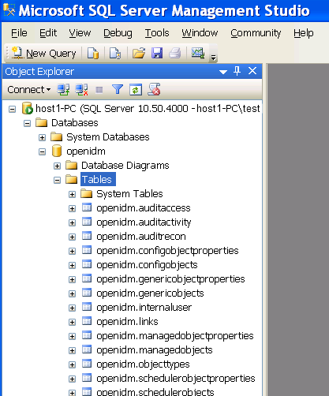

By default, OpenIDM uses OrientDB for its internal repository so that you do not have to install a database in order to evaluate OpenIDM. Before using OpenIDM in production, however, you must replace OrientDB with a supported JDBC repository.
OpenIDM supports the use of MySQL, MS SQL, and Oracle Database as internal repositories. For details of the supported versions, see Before You Install OpenIDM Software in the Release Notes.
After you have installed MySQL on the local host and before starting OpenIDM for the first time, set up OpenIDM to use the new repository, as described in the following sections.
This procedure assumes that a password has already been set for the MySQL root user.
Download MySQL Connector/J, version 5.1 or later from the MySQL website. Unpack the delivery, and copy the .jar into the
openidm/bundledirectory.$ cp mysql-connector-java-version-bin.jar /path/to/openidm/bundle/Make sure that OpenIDM is stopped.
$ cd /path/to/openidm/ $ ./shutdown.sh OpenIDM is not running, not stopping.Remove
openidm/conf/repo.orientdb.json.$ cd /path/to/openidm/conf/ $ rm repo.orientdb.json
Copy
openidm/samples/misc/repo.jdbc.jsonto theopenidm/confdirectory.$ cd /path/to/openidm/conf $ cp ../samples/misc/repo.jdbc.json .
Import the data definition language script for OpenIDM into MySQL.
$ cd /path/to/mysql $ ./bin/mysql -u root -p < /path/to/openidm/db/scripts/mysql/openidm.sql Enter password: $
This step creates an
openidmdatabase for use as the internal repository, and a useropenidmwith passwordopenidmwho has all the required privileges to update the database.$ ./bin/mysql -u root -p Enter password: Welcome to the MySQL monitor. Commands end with ; or \g. Your MySQL connection id is 18 Server version: 5.5.19 MySQL Community Server (GPL) ... mysql> use openidm; Reading table information for completion of table and column names You can turn off this feature to get a quicker startup with -A Database changed mysql> show tables; +---------------------------+ | Tables_in_openidm | +---------------------------+ | auditaccess | | auditactivity | | auditrecon | | clusterobjectproperties | | clusterobjects | | configobjectproperties | | configobjects | | genericobjectproperties | | genericobjects | | internaluser | | links | | managedobjectproperties | | managedobjects | | objecttypes | | schedulerobjectproperties | | schedulerobjects | | security | | securitykeys | | uinotification | +---------------------------+ 19 rows in set (0.00 sec)
The table names are similar to those used with OrientDB.
Update
openidm/conf/repo.jdbc.jsonas necessary, to reflect your MySQL deployment."connection" : { "dbType" : "MYSQL", "jndiName" : "", "driverClass" : "com.mysql.jdbc.Driver", "jdbcUrl" : "jdbc:mysql://localhost:3306/openidm", "username" : "openidm", "password" : "openidm", "defaultCatalog" : "openidm", "maxBatchSize" : 100, "maxTxRetry" : 5, "enableConnectionPool" : true, "connectionTimeoutInMs" : 30000 },
When you have set up MySQL for use as the OpenIDM internal repository,
start OpenIDM to check that the setup has been successful. After startup,
you should see that repo.jdbc is
active, whereas repo.orientdb is
unsatisfied.
$ cd /path/to/openidm $ ./startup.sh Using OPENIDM_HOME: /path/to/openidm Using OPENIDM_OPTS: -Xmx1024m -Xms1024m Using LOGGING_CONFIG: -Djava.util.logging.config.file=/path/to/openidm/conf/logging.properties Using boot properties at /path/to/openidm/conf/boot/boot.properties -> scr list Id State Name [ 19] [active ] org.forgerock.openidm.config.starter [ 23] [active ] org.forgerock.openidm.taskscanner [ 8] [active ] org.forgerock.openidm.external.rest [ 12] [active ] org.forgerock.openidm.provisioner.openicf.connectorinfoprovider [ 15] [active ] org.forgerock.openidm.ui.simple [ 1] [active ] org.forgerock.openidm.router [ 22] [active ] org.forgerock.openidm.scheduler [ 14] [active ] org.forgerock.openidm.restlet [ 7] [unsatisfied ] org.forgerock.openidm.external.email [ 18] [unsatisfied ] org.forgerock.openidm.repo.orientdb [ 6] [active ] org.forgerock.openidm.sync [ 3] [active ] org.forgerock.openidm.script [ 5] [active ] org.forgerock.openidm.recon [ 2] [active ] org.forgerock.openidm.scope [ 10] [active ] org.forgerock.openidm.http.contextregistrator [ 20] [active ] org.forgerock.openidm.config [ 0] [active ] org.forgerock.openidm.audit [ 21] [active ] org.forgerock.openidm.schedule [ 17] [active ] org.forgerock.openidm.repo.jdbc [ 16] [active ] org.forgerock.openidm.workflow [ 13] [active ] org.forgerock.openidm.provisioner.openicf [ 4] [active ] org.forgerock.openidm.managed [ 9] [active ] org.forgerock.openidm.authentication [ 11] [active ] org.forgerock.openidm.provisioner
These instructions are specific to MS SQL Server 2008 R2 Express running on a local Windows XP system. Adapt the instructions for your environment.
When you install MS SQL Server, note that OpenIDM has the following specific configuration requirements:
OpenIDM requires SQL Server authentication. During the MS SQL Server installation, make sure that you select SQL Server authentication and not just Windows authentication.
During the Feature Selection installation step, make sure that at least SQL Server Replication, Full Text Search, and Management Tools - Basic are selected.
These instructions require SQL Management Studio so make sure that you include Management Tools in the installation.
TCP/IP must be enabled and configured for the correct IP address and port. To configure TCP/IP, follow these steps:
Click Start > All Programs > MS SQL Server 2008 R2 > Configuration Tools > SQL Server Configuration Manager.
Expand the SQL Server Network Configuration item and select "Protocols for SQLEXPRESS".
Double click TCP/IP and select Enabled > Yes.
Select the IP Addresses tab and set the addresses and ports on which the server will listen.
For this sample procedure, scroll down to IPAll and set TCP Dynamic Ports to 1433 (the default port for MS SQL).
Click Apply, then OK.
Restart MS SQL Server for the configuration changes to take effect. To restart the server, select SQL Server Services in the left pane, double click SQL Server (SQLEXPRESS) and click Restart.
If you have a firewall enabled, ensure that the port you configured in the previous step is open for OpenIDM to access MS SQL.
After you have installed MS SQL on the local host, install OpenIDM, if you have not already done so, but do not start the OpenIDM instance. Import the data definition and set up OpenIDM to use the new repository, as described in the following steps.
Use SQL Management Studio to import the data definition language script for OpenIDM into MS SQL.
Click Start > All Programs > MS SQL Server 2008 R2 > SQL Server Management Studio.
On the Connect to Server panel, select SQL Server Authentication from the Authentication drop down list and log in as the current user (for example, Administrator).
Select File > Open > File and navigate to the OpenIDM data definition language script (
path\to\openidm\db\scripts\mssql\openidm.sql). Click Open to open the file.Click Execute to run the script.
This step creates an
openidmdatabase for use as the internal repository, and a useropenidmwith passwordPassw0rdwho has all the required privileges to update the database. You might need to refresh the view in SQL Server Management Studio to see theopenidmdatabase in the Object Explorer.Expand Databases > openidm > Tables. You should see the OpenIDM tables in the openidm database, as shown in the following example:
 The table names are similar to those used with OrientDB.
OpenIDM requires an MS SQL driver that must be created from two separate JAR files. Create the driver as follows.
Download the JDBC Driver 4.0 for SQL Server (
sqljdbc_4.0.2206.100_enu.tar.gz) from Microsoft's download site. The precise URL may vary, depending on your location.Extract the executable Java archive file (
sqljdbc4.jar) from the zip file, using 7-zip or an equivalent file management application.Copy the file to
openidm\db\scripts\mssql.Download the
bndJava archive file (biz.aQute.bnd.jar) that enables you to create OSGi bundles. The file can be downloaded from http://dl.dropbox.com/u/2590603/bnd/biz.aQute.bnd.jar. For more information aboutbnd, see http://www.aqute.biz/Bnd/Bnd.Copy the file to
openidm\db\scripts\mssql.Your
openidm\db\scripts\mssqldirectory should now contain the following files:.\> ls \path\to\openidm\db\scripts\mssql biz.aQute.bnd.jar openidm.sql sqljdbc4.bnd sqljdbc4.jarBundle the two JAR files together with the following command:
C:\> cd \path\to\openidm\db\scripts\mssql ./> java -jar biz.aQute.bnd.jar wrap -properties sqljdbc4.bnd sqljdbc4.jarThis step creates a single
.barfile, namedsqljdbc4.bar.Rename the
sqljdbc4.barfile tosqljdbc4-osgi.jarand copy it to theopenidm\bundledirectory../> mv sqljdbc4.bar sqljdbc4-osgi.jar ./> cp sqljdbc4-osgi.jar \path\to\openidm\bundle
Remove the default OrientDB repository configuration file (
openidm\conf\repo.orientdb.json) from the configuration directory.C:\> cd \path\to\openidm\conf\ .\> del repo.orientdb.jsonCopy the repository configuration file for MS SQL (
openidm\samples\misc\repo.jdbc.json) to the configuration directory.C:\> cd \path\to\openidm\conf\ .\> cp ..\samples\misc\repo.jdbc-mssql.json .Rename the MS SQL repository configuration file to
repo.jdbc.json..\> mv repo.jdbc-mssql.json repo.jdbc.json
Update
openidm\conf\repo.jdbc.jsonas necessary, to reflect your MS SQL deployment.{ "connection" : { "dbType" : "SQLSERVER", "jndiName" : "", "driverClass" : "com.microsoft.sqlserver.jdbc.SQLServerDriver", "jdbcUrl" : "jdbc:sqlserver://localhost:1433;instanceName=default; databaseName=openidm;applicationName=OpenIDM", "username" : "openidm", "password" : "Passw0rd", "defaultCatalog" : "openidm", "maxBatchSize" : 100, "maxTxRetry" : 5, "enableConnectionPool" : true }, ...Specifically, check that the port matches what you have configured in MS SQL.
When you have completed the preceding steps, start OpenIDM to check that the
setup has been successful. After startup, you should see that
repo.jdbc is active, whereas
repo.orientdb is unsatisfied.
C:> cd \path\to\openidm ./> startup.bat "Using OPENIDM_HOME: \path\to\openidm" "Using OPENIDM_OPTS: -Xmx1024m -Xms1024m" "Using LOGGING_CONFIG: -Djava.util.logging.config.file=\path\to\openidm\conf\logging.properties" Using boot properties at \path\to\openidm\conf\boot\boot.properties -> scr list Id State Name [ 19] [active ] org.forgerock.openidm.config.starter [ 23] [active ] org.forgerock.openidm.taskscanner [ 8] [active ] org.forgerock.openidm.external.rest [ 12] [active ] org.forgerock.openidm.provisioner.openicf.connectorinfoprovider [ 15] [active ] org.forgerock.openidm.ui.simple [ 1] [active ] org.forgerock.openidm.router [ 22] [active ] org.forgerock.openidm.scheduler [ 14] [active ] org.forgerock.openidm.restlet [ 7] [unsatisfied ] org.forgerock.openidm.external.email [ 18] [unsatisfied ] org.forgerock.openidm.repo.orientdb [ 6] [active ] org.forgerock.openidm.sync [ 3] [active ] org.forgerock.openidm.script [ 5] [active ] org.forgerock.openidm.recon [ 2] [active ] org.forgerock.openidm.scope [ 10] [active ] org.forgerock.openidm.http.contextregistrator [ 20] [active ] org.forgerock.openidm.config [ 0] [active ] org.forgerock.openidm.audit [ 21] [active ] org.forgerock.openidm.schedule [ 17] [active ] org.forgerock.openidm.repo.jdbc [ 16] [active ] org.forgerock.openidm.workflow [ 13] [active ] org.forgerock.openidm.provisioner.openicf [ 4] [active ] org.forgerock.openidm.managed [ 9] [active ] org.forgerock.openidm.authentication [ 11] [active ] org.forgerock.openidm.provisioner
This section assumes that you have configured an Oracle Database with Local Naming Parameters (tnsnames.ora), a schema owner, and optionally a service user and its associated credentials for use by OpenIDM.
For more information on connecting to an Oracle database, see Connecting to Oracle Database.
You will need to import the OpenIDM schema using the data definition language
script found in
/path/to/openidm/db/scripts/oracle/openidm.sql using the
appropriate schema owner user.
If you have created OpenIDM tables correctly, you should be able to
query the internaluser table. The query should return two
records (openidm-admin and anonymous).
The output here has been formatted for legibility.
SQL> select * from internaluser; OBJECTID openidm-admin ----------------------------------------------------------------------------- REV 0 ----------------------------------------------------------------------------- PWD openidm-admin ----------------------------------------------------------------------------- ROLES openidm-admin,openidm-authorized ----------------------------------------------------------------------------- OBJECTID anonymous ----------------------------------------------------------------------------- REV 0 ----------------------------------------------------------------------------- PWD anonymous ----------------------------------------------------------------------------- ROLES openidm-reg -----------------------------------------------------------------------------
Before you start OpenIDM, you should create an Oracle DB driver from two separate jar files and set up the OpenIDM repository file for the Oracle DB. To do so, take the following steps:
Download the Oracle JDBC driver for your Oracle DB version from Oracle Technology Network and place it in the
openidm/db/scripts/oracledirectory.$ ls /path/to/openidm/db/scripts/oracle ojdbc6_g.jar
Create a bind file and edit it to match the version information for your JDBC driver.
You can use the sample bind file located in
openidm/db/scripts/mssql/. Copy the bind file to the same location as the JDBC driver.$ cd /path/to/openidm/db/scripts $ cp mssql/sqljdbc4.bnd oracle/ $ ls oracle/ ojdbc6_g.jar sqljdbc4.bnd
The JDBC driver version information for your driver is located in the
Specification-Versionproperty in the MANIFEST file of the driver.$ cd /path/to/openidm/db/scripts/oracle $ unzip -q -c ojdbc6_g.jar META-INF/MANIFEST.MF ... Specification-Vendor: Sun Microsystems Inc. Specification-Title: JDBC Specification-Version: 4.0 ...
Edit the bind file to match the JDBC driver version.
$ more sqljdbc4.bnd ... version=4.0 Export-Package: *;version=3.1.0-SNAPSHOT Bundle-Name: Oracle JDBC Driver 4.0 for SQL Server Bundle-SymbolicName: Oracle JDBC Driver 4.0 for SQL Server Bundle-Version: 3.1.0-SNAPSHOT
Download the
bndJava archive file (biz.aQute.bnd.jar) that enables you to create OSGi bundles. The file can be downloaded from http://dl.dropbox.com/u/2590603/bnd/biz.aQute.bnd.jar. For more information aboutbnd, see http://www.aqute.biz/Bnd/Bnd.Place the
bndJava archive file in the same directory as the JDBC driver, and the bind file.$ ls /path/to/openidm/db/scripts/oracle/ biz.aQute.bnd.jar ojdbc6_g.jar sqljdbc4.bnd
Change to the directory in which the three files are located and run the following command to create the OSGi bundle.
$ cd /path/to/openidm/db/scripts/oracle/ $ java -jar biz.aQute.bnd.jar wrap -properties sqljdbc4.bnd ojdbc6_g.jar Dec 10, 2013 9:53:28 AM java.util.prefs.FileSystemPreferences$1 run INFO: Created user preferences directory. ojdbc6_g 984 0
A new
.barfile has now been created.$ ls biz.aQute.bnd.jar ojdbc6_g.bar ojdbc6_g.jar sqljdbc4.bnd
Move the
.barfile to theopenidm/bundledirectory and rename it with a.jarextension. The actual name of the file is unimportant.$ mv ojdbc6_g.bar /path/to/openidm/bundle/ojdbc6_g-osgi.jar
Remove the default OrientDB configuration file (
openidm/conf/repo.orientdb.json) from the configuration directory.$ rm /path/to/openidm/conf/repo.orientdb.json
Copy the OracleDB configuration file (
openidm/samples/misc/repo.jdbc-oracle.json) to the configuration directory and rename the filerepo.jdbc.json.$ cd /path/to/openidm/conf $ cp ../samples/misc/repo.jdbc-oracle.json repo.jdbc.json
Update
openidm/conf/repo.jdbc.jsonas necessary, to reflect your OracleDB deployment. Specifically, edit thejdbcUrl,username, andpasswordproperties. For example:"connection" : { "dbType" : "ORACLE", "jndiName" : "", "driverClass" : "oracle.jdbc.OracleDriver", "jdbcUrl" : "jdbc:oracle:thin:@//localhost:1521/openidm", "username" : "openidm", "password" : "password", "defaultCatalog" : "openidm", "maxBatchSize" : 100, "maxTxRetry" : 5, "connectionTimeoutInMs" : 30000 },
The following parameters relate to the Oracle database:
The
"dbType"is"ORACLE".The
"driverClass"is"oracle.jdbc.OracleDriver".The
"jdbcUrl"corresponds to the URL of the Oracle DB listener, including the service name, based on your configured Local Naming Parameters (tnsnames.ora). It should be whatever is appropriate for your environment. Replace "openidm" with the service name from your TNS description.The
"username"and"password"corresponds to the credentials of the service user that connects from OpenIDM. Use the username of the service user you have created with grants to the OpenIDM tables you created earlier.The
"defaultCatalog"is used to generate queries appropriate to your OpenIDM schema in Oracle. It should match the user who "owns" the tables. If your schema owner was"openidm", then the"defaultCatalog"should also be"openidm". This will cause OpenIDM to generate queries such as"SELECT objectid FROM openidm.internaluser".
When you have set up OracleDB for use as the OpenIDM internal repository, start OpenIDM to check that the setup has been successful. On startup, a number of INFO messages are output, as the predefined queries are processed.
After startup, you should see that repo.jdbc is
active, whereas repo.orientdb is
unsatisfied.
$ cd /path/to/openidm $ ./startup.sh Using OPENIDM_HOME: /path/to/openidm Using OPENIDM_OPTS: -Xmx1024m -Xms1024m Using LOGGING_CONFIG: -Djava.util.logging.config.file=/path/to/openidm/conf/logging.properties Using boot properties at /path/to/openidm/conf/boot/boot.properties .... -> scr list Id State Name ... [ 2] [unsatisfied ] org.forgerock.openidm.repo.orientdb ... [ 3] [active ] org.forgerock.openidm.repo.jdbc ...
OpenIDM provides a specific configuration file for each supported JDBC
repository, as well as example configurations for other repositories. These
configuration files are located in
/path/to/openidm/samples/misc and are named
repo.jdbc-. Copy
the configuration file for your specific database type to
database.json/path/to/openidm/conf/repo.jdbc.json.
The repository configuration file includes the connection details for the repository, a number of predefined queries, and a mapping between OpenIDM resources and the tables in the repository.
An excerpt from an example repository configuration follows.
{
"connection" : {
"dbType" : "MYSQL",
"jndiName" : "",
"driverClass" : "com.mysql.jdbc.Driver",
"jdbcUrl" : "jdbc:mysql://localhost:3306/openidm?characterEncoding=utf8",
"username" : "openidm",
"password" : "openidm",
"defaultCatalog" : "openidm",
"maxBatchSize" : 100,
"maxTxRetry" : 5,
"enableConnectionPool" : true,
"connectionTimeoutInMs" : 30000
},
"queries" : {...},
"resourceMapping" : {...}
}
"dbType" : string, optionalThe type of database. The database type might affect the queries used and other optimizations. Supported database types include
MYSQL,SQLSERVER, andORACLE."driverClass","jndiName", or"jtaName"Depending on the mechanism you use to acquire the data source, set one of these properties.
"driverClass" : stringTo use the JDBC driver manager to acquire a data source, set this property, as well as
"jdbcUrl","username", and"password". The driver class must be the fully qualified class name of the database driver to use for your database.Using the JDBC driver manager to acquire a data source is the most likely option, and the only one supported "out of the box". The remaining options in the sample repository configuration file assume that you are using a JDBC driver manager.
Example:
"driverClass" : "com.mysql.jdbc.Driver""jndiName" : stringIf you use JNDI to acquire the data source, set this property to the JNDI name of the data source.
This option might be relevant if you want to run OpenIDM inside your own web container.
Example:
"jndiName" : "jdbc/my-datasource""jtaName" : stringIf you use an OSGi service to acquire the data source, set this property to a stringified version of the OsgiName.
This option would only be relevant in a highly customized deployment, for example, if you wanted to develop your own connection pool.
Example:
"jtaName" : "osgi:service/javax.sql.DataSource/(osgi.jndi.service.name=jdbc/openidm)"
"jdbcUrl"The connection URL to the JDBC database. The URL should include all of the parameters required by your database. For example, to specify the encoding in MySQL use
'characterEncoding=utf8'.Example:
"jdbcUrl" : "jdbc:mysql://localhost:3306/openidm?characterEncoding=utf8""username"The username with which to access the JDBC database.
"password"The password with which to access the JDBC database. OpenIDM automatically encrypts clear string passwords. To replace an existing encrypted value, replace the whole
crypto-objectvalue, including the brackets, with a string of the new password."defaultCatalog"The database schema to use for OpenIDM. By default, no schema prefix is used for queries.
"maxBatchSize"The maximum number of SQL statements that will be batched together. This parameter allows you to optimize the time taken to execute multiple queries. Certain databases do not support batching, or limit how many statements can be batched. A value of
1disables batching."queries"Enables you to create pre-defined queries that can be referenced from the configuration. The queries are divided between those for
"genericTables"and those for"explicitTables".The following sample extract from the default MySQL configuration file shows two credential queries, one for a generic mapping, and one for an explicit mapping. Note that the lines have been broken here for legibility only. In a real configuration file, the query would be all on one line.
"queries" : { "genericTables" : { "credential-query" : "SELECT fullobject FROM ${_dbSchema}.${_mainTable} obj INNER JOIN ${_dbSchema}.${_propTable} prop ON obj.id = prop.${_mainTable}_id INNER JOIN ${_dbSchema}.objecttypes objtype ON objtype.id = obj.objecttypes_id WHERE prop.propkey='/userName' AND prop.propvalue = ${username} AND objtype.objecttype = ${_resource}", ... "explicitTables" : { "credential-query" : "SELECT * FROM ${_dbSchema}.${_table} WHERE objectid = ${username} and accountStatus = 'active'", ... } }Options supported for query parameters include the following:
A default string parameter, for example:
openidm.query("managed/user", { "_queryId": "for-userName", "uid": "jdoe" });A list parameter (
${list:propName}).Use this parameter to specify a set of indeterminate size as part of your query. For example:
WHERE targetObjectId IN (${list:filteredIds})An integer parameter (
${int:propName}).Use this parameter if you need query for non-string values in the database. This is particularly useful with explicit tables.
"resourceMapping"Defines the mapping between OpenIDM resource URIs (for example,
managed/user) and JDBC tables. The structure of the resource mapping is as follows:"resourceMapping" : { "default" : { "mainTable" : "genericobjects", "propertiesTable" : "genericobjectproperties", "searchableDefault" : true }, "genericMapping" : {...}, "explicitMapping" : {...} }The default mapping object represents a default generic table in which any resource that does not have a more specific mapping is stored.
The generic and explicit mapping objects are described in the following section.
For JDBC repositories, there are two ways of mapping OpenIDM objects to the database tables.
Generic mapping, which allows arbitrary objects to be stored without special configuration or administration.
Explicit mapping, which allows for optimized storage and queries by explicitly mapping objects to tables and columns in the database.
These two mapping strategies are discussed in the following sections.
Generic mapping speeds up development, and can make system maintenance more flexible by providing a more stable database structure. However, generic mapping can have a performance impact and does not take full advantage of the database facilities (such as validation within the database and flexible indexing). In addition, queries can be more difficult to set up.
In a generic table, the entire object content is stored in a single
large-character field named "fullobject" in the
"mainTable" for the object. To search on specific fields,
you can read them by referring to them in the corresponding
properties table for that object. The disadvantage of
generic objects is that, because every property you might like to filter by
is stored in a separate table, you must join to that table each time you need
to filter by anything.
The following diagram shows a pared down database structure for the default generic table, and indicates the relationship between the main table and the corresponding properties table for each object.
 |
These separate tables can make the query syntax particularly complex. For example, a simple query to return user entries based on a user name would need to be implemented as follows:
SELECT fullobject FROM ${_dbSchema}.${_mainTable} obj INNER JOIN ${_dbSchema}.${_propTable} prop
ON obj.id = prop.${_mainTable}_id INNER JOIN ${_dbSchema}.objecttypes objtype
ON objtype.id = obj.objecttypes_id WHERE prop.propkey='/userName' AND prop.propvalue = ${uid}
AND objtype.objecttype = ${_resource}",
The query can be broken down as follows:
Select the full object from the main table
SELECT fullobject FROM ${_dbSchema}.${_mainTable} objJoin to the properties table and locate the object with the corresponding ID.
INNER JOIN ${_dbSchema}.${_propTable} prop ON obj.id = prop.${_mainTable}_idJoin to the object types table to restrict returned entries to objects of a specific type. For example, you might want to restrict returned entries to
managed/userobjects, ormanaged/roleobjects.INNER JOIN ${_dbSchema}.objecttypes objtype ON objtype.id = obj.objecttypes_idFilter records by the
userNameproperty, where the userName is equal to the specifieduidand the object type is the specified type (in this case, managed/user objects).WHERE prop.propkey='/userName' AND prop.propvalue = ${uid} AND objtype.objecttype = ${_resource}",The value of the
uidfield is provided as part of the query call, for example:openidm.query("managed/user", { "_queryId": "for-userName", "uid": "jdoe" });
Tables for user definable objects use a generic mapping by default.
The following sample generic mapping object illustrates how
managed/ objects are stored in a generic table.
"genericMapping" : {
"managed/*" : {
"mainTable" : "managedobjects",
"propertiesTable" : "managedobjectproperties",
"searchableDefault" : true,
"properties" : {
"/picture" : {
"searchable" : false
}
}
}
},
"mainTable"(string, mandatory)Indicates the main table in which data is stored for this resource.
The complete object is stored in the
fullobjectcolumn of this table. The table includes anentityTypeforeign key, that is used to distinguish the different objects stored within the table. In addition, the revision of each stored object is tracked, in therevcolumn of the table, enabling multi version concurrency control (MVCC). For more information, see Manipulating Managed Objects Programmatically in the Integrator's Guide."propertiesTable"(string, mandatory)Indicates the properties table, used for searches.
The contents of the properties table is a defined subset of the properties, copied from the character large object (CLOB) that is stored in the
fullobjectcolumn of the main table. The properties are stored in a one-to-many style separate table. The set of properties stored here is determined by the properties that are defined as"searchable".The stored set of searchable properties makes these values available as discrete rows that can be accessed with SQL queries, specifically, with
WHEREclauses. It is not otherwise possible to query specific properties of the full object.The properties table includes the following columns:
${_mainTable}_idcorresponds to theidof the full object in the main table, for example,manageobjects_id, orgenericobjects_id.propkeyis the name of the searchable property, stored in JSON pointer format (for example/mail. For more information about JSON pointer syntax, see RFC 6901.proptypeis the data type of the property, for examplejava.lang.String. The property type is obtained from the Class associated with the value.propvalueis the value of property, extracted from the full object that is stored in the main table.Regardless of the property data type, this value is stored as a string, so queries against it should treat it as such.
"searchableDefault"(boolean, optional)Specifies whether all properties of the resource should be searchable by default. Properties that are searchable are stored and indexed. You can override the default for individual properties in the
"properties"element of the mapping. The preceding example indicates that all properties are searchable, with the exception of the"picture"property.For large, complex objects, having all properties searchable implies a substantial performance impact. In such a case, a separate insert statement is made in the properties table for each element in the object, every time the object is updated. Also, because these are indexed fields, the recreation of these properties incurs a cost in the maintenance of the index. You should therefore enable
"searchable"only for those properties that must be used as part of a WHERE clause in a query."properties"Lists any individual properties for which the searchable default should be overridden.
Note that if an object was originally created with a subset of
"searchable"properties, changing this subset (by adding a new"searchable"property in the configuration, for example) will not cause the existing values to be updated in the properties table for that object. To add the new property to the properties table for that object, you must update or recreate the object.
By default, all properties in a generic mapping are searchable.
Although there are no individual indexes in a generic mapping, you can
improve search performance by setting only those properties that you need to
search as "searchable". Properties that are searchable
are created within the corresponding properties table. The properties table
exists only for searches or look-ups, and has a composite index, based on
the resource, then the property name.
To restrict searches to specific properties, set the
"searchableDefault" to false for the mapping, and then
explicitly set "searchable" to true for each property
that should be searched. The following sample extract from
repo.jdbc.json indicates searches restricted to the
"userName" property.
"genericMapping" : {
"managed/user" : {
"mainTable" : "manageduserobjects",
"propertiesTable" : "manageduserobjectproperties",
"searchableDefault" : false,
"properties" : {
"/userName" : {
"searchable" : true
}
}
}
},
With this configuration, OpenIDM creates entries in the properties table
only for "userName" properties of managed user objects.
If the global "searchableDefault" is set to false,
properties that do not have a searchable attribute explicitly set to true
are not written in the properties table.
Explicit mapping is more difficult to set up and maintain, but can take complete advantage of the native database facilities.
An explicit table offers better performance and simpler queries. There is less work in the reading and writing of data, since the data is all in a single row of a single table. In addition, it is easier to create different types of indexes that apply to only specific fields in an explicit table. The disadvantage of explicit tables is the additional work required in creating the table in the schema. Also, because rows in a table are inherently more simple, it is more difficult to deal with complex objects. Any non-simple key:value pair in an object associated with an explicit table is converted to a JSON string and stored in the cell in that format. This makes the value difficult to use, from the perspective of a query attempting to search within it.
Note that it is possible to have a generic mapping configuration for most
managed objects, and to have an explicit mapping that
overrides the default generic mapping in certain cases. The sample
configuration provided in
/path/to/openidm/samples/misc/repo.jdbc-mysql-explicit-managed-user.json
has a generic mapping for managed objects, but an explicit mapping for
managed user objects.
OpenIDM uses explicit mapping for internal system tables, such as the tables used for auditing.
Depending on the types of usage your system is supporting, you might find that an explicit mapping performs better than a generic mapping. Operations such as sorting and searching (such as those performed in the default UI) tend to be faster with explicitly-mapped objects, for example.
The following sample explicit mapping object illustrates how
internal/user objects are stored in an explicit table.
"explicitMapping" : {
"internal/user" : {
"table" : "internaluser",
"objectToColumn" : {
"_id" : "objectid",
"_rev" : "rev",
"password" : "pwd",
"roles" : "roles"
}
},
...
}
"<resource-uri>"(string, mandatory)Indicates the URI for the resources to which this mapping applies, for example,
"internal/user"."table"(string, mandatory)The name of the database table in which the object (in this case internal users) is stored.
"objectToColumn"(string, mandatory)The way in which specific managed object properties are mapped to columns in the table.
The mapping can be a simple one to one mapping, for example
"userName": "userName",or a more complex JSON map or list. When a column is mapped to a JSON map or list, the syntax is as shown in the following examples:"messageDetail" : { "column" : "messagedetail", "type" : "JSON_MAP" }or
"roles": { "column" : "roles", "type" : "JSON_LIST" }
To configure SSL with a JDBC repository, you need to import the CA
certificate file for the server into two locations: the Java truststore
and the OpenIDM truststore. That certificate file could have a name like
ca-cert.pem. If you have a different genuine or
self-signed certificate file, substitute accordingly.
To import the CA certificate file into both truststores, use the
keytool command native to the Java environment, typically
located in the /path/to/jre-version/bin directory. On
some UNIX-based systems, /usr/bin/keytool may link
to that command.
You can find the Java truststore file, cacerts, in the
/path/to/jre-version/jre/lib/security directory. On
some UNIX-based systems, that may be linked to a location such as
/etc/pki/java/cacerts.
Import the
ca-cert.pemcertificate into the Java truststore file with the following command:$ keytool \ -importcert \ -trustcacerts -file ca-cert.pem \ -alias "DB cert" \ -keystore /etc/pki/java/cacertsImport the
ca-cert.pemcertificate into the OpenIDM truststore file with the following command:$ keytool \ -importcert \ -trustcacerts \ -file ca-cert.pem \ -alias "DB cert" \ -keystore /path/to/openidm/security/truststoreOpen the repository configuration file,
repo.jdbc.json.Look for the
"jdbcUrl"properties. You should see ajdbcURL. Add a?characterEncoding=utf8&useSSL=trueto the end of that URL.The
"jdbcUrl"that you configure depends on your JDBC repository. The following entries correspond to appropriate"jdbcURL"properties for MySQL, MSSQL, and Oracle DB, respectively."jdbcUrl" : "jdbc:mysql://localhost:3306/openidm?characterEncoding=utf8&useSSL=true"
"jdbcUrl" : "jdbc:sqlserver://localhost:1433;instanceName=default; databaseName=openidm;applicationName=OpenIDM?characterEncoding=utf8&useSSL=true""jdbcUrl" : "jdbc:oracle:thin:@//localhost:1521/openidm?characterEncoding=utf8&useSSL=true"
Open the
/path/to/openidm/conf/config.propertiesfile. Find theorg.osgi.framework.bootdelegationproperty. Make sure that property includes a reference to thejavax.net.ssloption. If you started with the default version ofconfig.propertiesthat line should now read as follows:org.osgi.framework.bootdelegation=sun.*,com.sun.*,apple.*,com.apple.*,javax.net.ssl